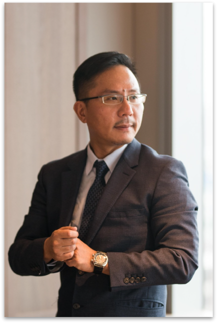

<div class="introducer_bg"><div class="introducer_block container"><h2 class="title text-center">創辦人介紹</h2><div class="row"><div class="col-md-6"><div class="introducer_img text-center" data-aos="fade-right" data-aos-offset="300" data-aos-easing="ease-in-sine"></div></div><div class="col-md-6"><div class="introducer_body"><div data-aos="zoom-out-left"><strong class="h4">創辦人 楊世裕 <small>先生 </small></strong><p>敦泰建設創立於2013年6月﹔出身中部知名企業家族、建築業家學淵源背景，旅美多年回國，沒有選擇在富三代的舒適圈中安穩度日，而選擇實現自己的建築及創業理念，創立了敦泰建設。</p></div><div data-aos="zoom-out-left"><strong class="h4">學歷</strong><p>美國德州州立大學 企業暨會計碩士<br/>東海大學政治系 學士<br/>美國註冊會計師<br/>國家地政士考試合格<br/>不動產經紀人考試合格</p></div><div data-aos="zoom-out-left"><strong class="h4">經歷</strong><p>美國LPX會計師事務所<br/>美國Jene's Collection 營運暨財務副總<br/>太日東龍建設開發股份有限公司 副董事長</p></div><div data-aos="zoom-out-left"><strong class="h4">扶輪社經歷</strong><p>台中東海扶輪社<br/>台中黎明扶輪社 創設秘書，第二屆社長</p></div><div class="introducer_btn text-center"><a href="/about">關於敦泰</a></div></div></div></div></div></div>